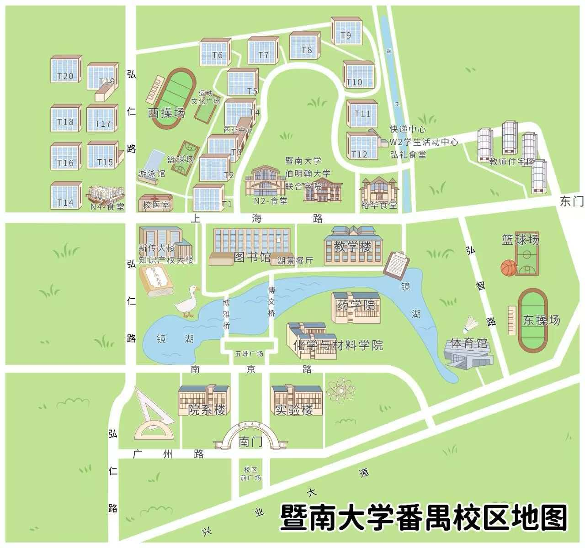

ABOUT THE COMMUNITY
📢 记得加入对应专业新生群
很多新生只关心宿舍和军训，却容易错过大一真正值得提前了解的机会。
🎓
真实经验
学长学姐分享选课、综测、学习、生活以及各种避坑经验。
🚀
成长机会
竞赛、大创项目、实验室申请、班干部竞选等信息整理。
🤝
资源互助
靠谱兼职经验、二手资源交易、生活问题交流，信息尽量公开透明。
你可以在群里获得：
- 学长学姐真实经验分享
- 各类学科竞赛、大创项目入门攻略
- 学院实验室怎么进、什么时候可以申请
- 大一如何准备班干部竞选
- 选课、综测、学习生活实用干货
- 校内靠谱兼职经验分享
- 二手资源交易与互助信息
CAMPUS MAP
🗺️ 校区地图
报到前可以先熟悉一下。开学第一天少走一点冤枉路，毕竟广东的太阳没有耐心陪你散步。

该校区地图暂未上传
请将 jnu-xxx.jpg 放入网站目录后刷新
💡 下载「番禺校区」高清 JPG 版地图，方便保存在手机里随时查看

Get More Information
加入学校公众号了解更多资讯
学校信息可以在公众号查询。
了解更多关于番禺校区的事情。
是暨南人的好帮手。

微信扫码关注公众号